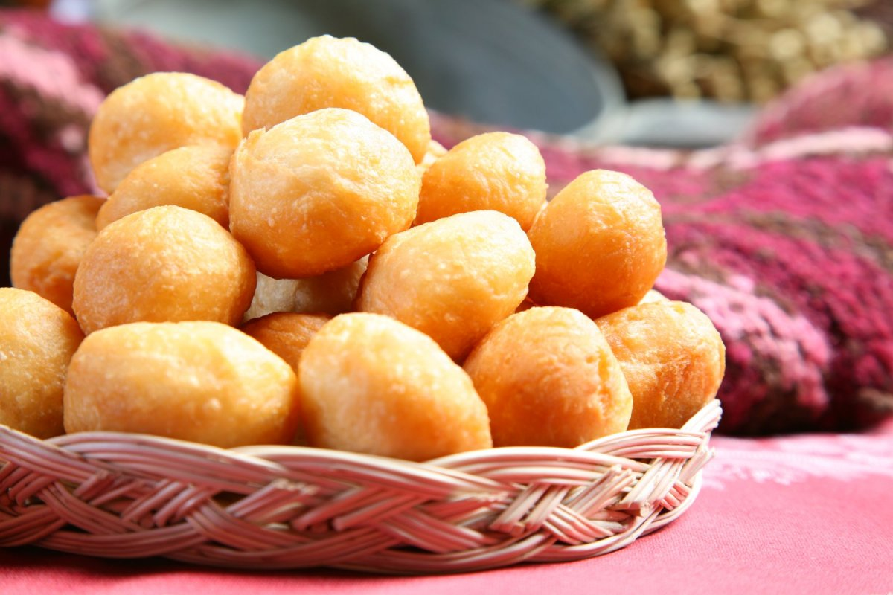

Бауырсақ
Бауырсақ - шай, қымыз, шұбат ішкенде дастарқанға салады. Бауырсақты жоғары немесе бірінші сортты бидай ұнынан пісіреді. Оны қамырды ашытып та ашытпай да дайындауға болады. Ашытпай пісірген бауырсақ көпке шыдайды, ал ашытып пісірілген бауырсақ кеуіп қалса, жеуге жайсыз болады.
Ашымаған қамырдан бауырсақ пісіру үшін ұнға май, жұмыртқа, сүт, тұз салып илейді (айран құйса даболады). Қамырды иін қандыра қатты илеп қоя тұру керек. Содан кейін қамырды жазып, төрт бұрыштап кесіп немесе жіңішкелеу етіп есіп алып, содан кейін кессе да болады. Кесіп дайындаған бауырсақтың бетін кеуіп кетпеу үшін жауып қойған жөн. Қазанға май салып әбден қыздырып алған соң, бауырсақ майдың мөлшеріне қарай салынады. Бауырсақты үздіксіз араластырып тұрса, бір келкі болып піседі. От қатты жанса, бауырсақтың іші шикі болады немесе тым қызарып кетеді. Қызыл-күрең болып піскен бауырсақ сәнді де, дәмді де болады. 4-5 стақан бидай ұны, 1стақан сүт (немесе су), 1 шай қасық тұз, 2 ас қасық сары май, 2 жұмыртқа керек.
Ашытқан қамырдан бауырсақ пісіру үшін жылы суға ашытқы, қант, ұн салып жылы жерге қою керек. Ашықты көпіршектеніп ашыған кезде тұз, май, жұмыртқа, ұн салып өте жұмсақ етіп иін қандыра илейді. Жұмсақ иленген бауырсақ жақсы қабарып, жұмсақ болып піседі. 4-5 стақан бидай ұны, бір ас қасық ашытқы, 2 ас қасық қант, 1 шай қасық тұз, 1 стақан сұйық май, 1 стақан сүт (немесе су), 2 жұмыртқа. Ашытқан қамырды есіп, жұқалап жаяды да, бір-келкі етіп кеседі, тақтайға немесе табаққа бір-бірлеп тізіп, 10-15 минут қойып, қабарғаннан кейін пісірсе, іші шикі болмайды. Бауырсақты қалыңдығы 2 см етіп жайып, қызып тұрған майға пісіреді.
